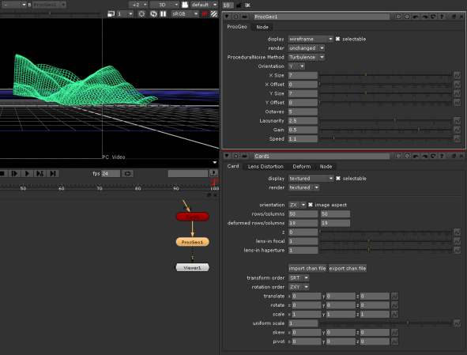

的 Procegeo 或 ProceduralNoise 节点允许您使用 Perlin noise 函数修改 3D 对象，该函数创建 似乎 随机噪音。例如，您可以使用 progeo 节点为波纹波或云生成动画噪声，或者从平面卡片创建地形，如下图所示:
|
 |
|
使用 proceo 节点从 card 对象创建地形。 |
您可以在 proceo 节点的参数中选择噪音类型并控制其外观。
| 1。 | 选择 3D > 修改 > 程序噪音 在要修改的 3D 对象后的任意位置插入 procegeo 节点。 |
| 2. | 将查看器附加到节点以查看您的更改。 |
| 3. | 在节点的控件中，使用 显示 下拉菜单，选择在对对象进行更改时在查看器中查看对象的方式。 |
| 4. | 从 程序噪声法 下拉菜单中，选择要使用的噪音类型: 湍流 或 FBm (分形布朗运动)。 |
| 5. | 要选择是否修改 x 、 y 或 z 值或所有值，请使用 定位 下拉菜单。 |
| 6. | 要更改噪音的外观，请调整其余参数。例如，要控制噪音的细节量，请调整 八度 . |
|
|